AJANTA & ALLORA CAVES
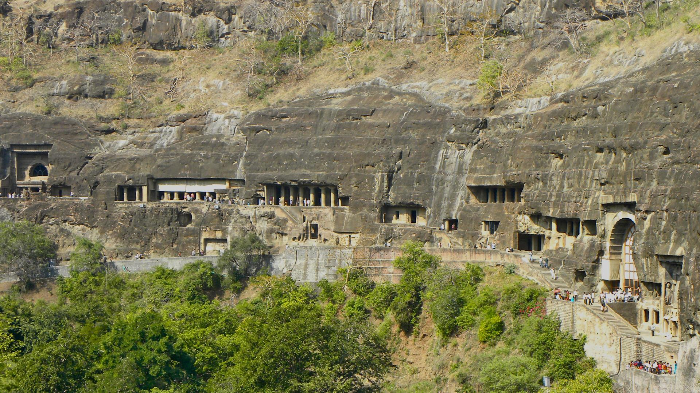The Ajanta and Ellora caves depict true craftsmanship skills where each rock carving was done by hand. When British officer John Smith set out to chase a tiger in 1819, he would never have thought that he would uncover the majestic Ajanta caves. These 29 caves are full of sculptures and paintings that epitomise Buddha and various Jataka tales.
Blending three different religions: Buddhism, Jainism and Brahmanism, the 34 caves at Ellora have been carved on the walls of a basaltic hill. There are 12 Buddhist caves, 17 Hindu caves and 5 Jain caves. Most of these caves are monasteries that were used for praying and studying.
The Ajanta Caves are 29 (approximately) rock-cut Buddhist cave monuments which date from the 2nd century BCE to about 480 CE in Aurangabad district of Maharashtra state of India. The caves include paintings and rock-cut sculptures described as among the finest surviving examples of ancient Indian art, particularly expressive paintings that present emotion through gesture, pose and form.
According to UNESCO, these are masterpieces of Buddhist religious art that influenced the Indian art that followed. The caves were built in two phases, the first phase starting around the 2nd century BCE, while the second phase was built around 400–650 CE, according to older accounts, or in a brief period of 460–480 CE according to later scholarship. The site is a protected monument in the care of the Archaeological Survey of India, and since 1983, the Ajanta Caves have been a UNESCO World Heritage Site.
The Ajanta Caves constitute ancient monasteries and worship-halls of different Buddhist traditions carved into a 250-feet wall of rock. The caves also present paintings depicting the past lives and rebirths of the Buddha, pictorial tales from Aryasura's Jatakamala, and rock-cut sculptures of Buddhist deities. Textual records suggest that these caves served as a monsoon retreat for monks, as well as a resting-site for merchants and pilgrims in ancient India. While vivid colours and mural wall-painting were abundant in Indian history as evidenced by historical records, Caves 16, 17, 1 and 2 of Ajanta form the largest corpus of surviving ancient Indian wall-painting.
The Ajanta Caves are mentioned in the memoirs of several medieval-era Chinese Buddhist travellers to India and by a Mughal-era official of Akbar era in the early 17th century. They were covered by jungle until accidentally "discovered" and brought to Western attention in 1819 by a colonial British officer on a tiger-hunting party. The Ajanta Caves are located on the side of a rocky cliff that is on the north side of a U-shaped gorge on the small river Waghur, in the Deccan plateau. Further round the gorge are a number of waterfalls, which, when the river is high, are audible from outside the caves.
With the Ellora Caves, Ajanta is the major tourist attraction of Maharashtra. They are about 59 kilometres (37 miles) from the city of Jalgaon, Maharashtra, India, 60 kilometres (37 miles) from Pachora, 104 kilometres (65 miles) from the city of Aurangabad, and 350 kilometres (220 miles) east-northeast from Mumbai. They are 100 kilometres (62 miles) from the Ellora Caves, which contain Hindu, Jain and Buddhist caves, the last dating from a period similar to Ajanta. The Ajanta style is also found in the Ellora Caves and other sites such as the Elephanta Caves and the cave temples of Karnataka.
History
The Ajanta Caves are generally agreed to have been made in three distinct periods, the first belonging to the 2nd century BCE to 1st century CE, and a second period that followed several centuries later.
The caves consist of 36 identifiable foundations, some of them discovered after the original numbering of the caves from 1 through 29. The later identified caves have been suffixed with the letters of the alphabet, such as 15A, identified between originally numbered caves 15 and 16. The cave-numbering is a convention of convenience, and has nothing to do with chronological order of their construction.
Caves of the first (Satavahana) period
The earliest group constructed consists of caves 9, 10, 12, 13 and 15A. This grouping, and their belonging to the Hinayana tradition of Buddhism, is generally accepted by scholars, but there are differing opinions on which century in which the early caves were built. According to Walter Spink, they were made during the period 100 BCE to 100 CE, probably under the patronage of the Hindu Satavahana dynasty (230 BCE – c. 220 CE) who ruled the region. Other datings prefer the period of the Maurya Empire (300 BCE to 100 BCE). Of these, caves 9 and 10 are stupa containing worship halls of chaitya-griha form, and caves 12, 13, and 15A are vihāras (see the architecture section below for descriptions of these types). The first Satavahana period caves lacked figurative sculpture, emphasizing the stupa instead.
According to Spink, once the Satavahana period caves were made, the site was not further developed for a considerable period until the mid-5th century. However, the early caves were in use during this dormant period, and Buddhist pilgrims visited the site, according to the records left by Chinese pilgrim Faxian around 400 CE.
Caves of the later, or Vākāṭaka, period
The second phase of construction at the Ajanta Caves site began in the 5th century. For a long time it was thought that the later caves were made over an extended period from the 4th to the 7th centuries CE, but in recent decades a series of studies by the leading expert on the caves, Walter M. Spink, have argued that most of the work took place over the very brief period from 460 to 480 CE, during the reign of Hindu Emperor Harishena of the Vākāṭaka dynasty.This view has been criticised by some scholars, but is now broadly accepted by most authors of general books on Indian art, for example Huntington and Harle.
The second phase is attributed to the theistic Mahāyāna, or Greater Vehicle tradition of Buddhism. Caves of the second period are 1–8, 11, 14–29, some possibly extensions of earlier caves. Caves 19, 26, and 29 are chaitya-grihas, the rest viharas. The most elaborate caves were produced in this period, which included some refurbishing and repainting of the early caves.
Spink states that it is possible to establish dating for this period with a very high level of precision; a fuller account of his chronology is given below. Although debate continues, Spink's ideas are increasingly widely accepted, at least in their broad conclusions. The Archaeological Survey of India website still presents the traditional dating: "The second phase of paintings started around 5th–6th centuries A.D. and continued for the next two centuries".
According to Spink, the construction activity at the incomplete Ajanta Caves was abandoned by wealthy patrons in about 480 CE, a few years after the death of Harishena. However, states Spink, the caves appear to have been in use for a period of time as evidenced by the wear of the pivot holes caves constructed close to 480 CE. The second phase of constructions and decorations at Ajanta corresponds to the very apogee of Classical India, or India's golden age.
According to Richard Cohen, 7th-century Chinese traveler Xuanzang's reports about the caves, and the scattered graffiti from the medieval centuries uncovered at the site suggests that the Ajanta Caves were known and probably in use, but without a stable or steady Buddhist community presence at the site.The Ajanta caves are mentioned in the 17th-century text Ain-i-Akbari by Abu al-Fazl, as twenty four rock-cut cave temples each with remarkable idols.
Interesting fact: It is believed that the Buddhist monks were not allowed to go out during the monsoons and would sit and carve sculptures in the Ajanta caves.
Entry fee: Indians- INR 10
Foreigners- INR 250
There is no entrance fee on Fridays.
Open from: 9 am-5.30 pm ( Ajanta caves closed on Mondays & Ellora caves closed on Tuesdays)
Must see: Ajanta: Cave 26 which is an elaborately decorated Chaitya hall with a stupa.
Ellora: The ‘Cavern of the Ten Avatars’ built under the reign of Krishna I.
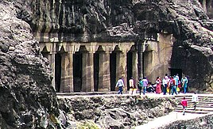
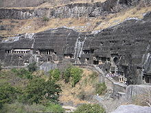
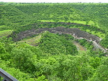
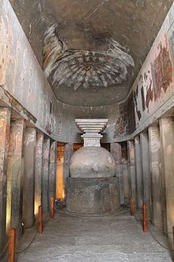
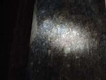
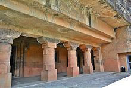
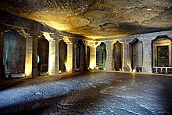
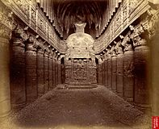
 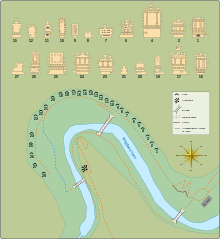
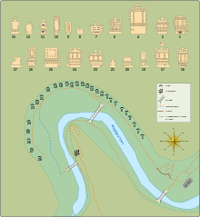
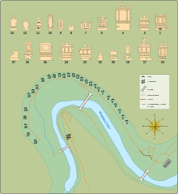
Developed By: Vineet Choudhary